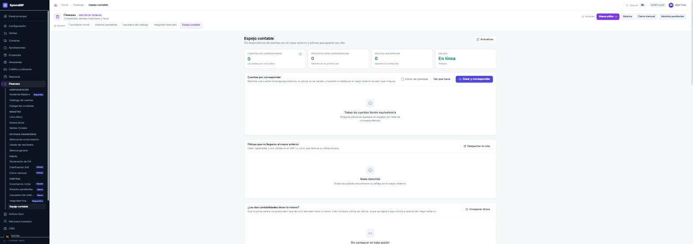
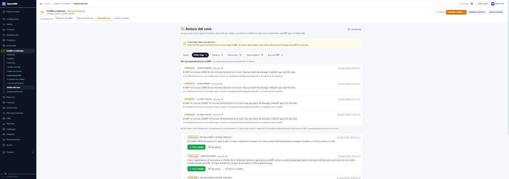
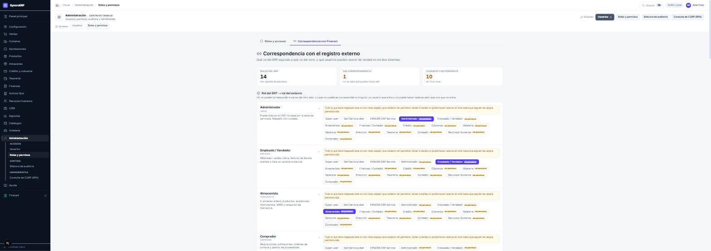

syncro:cliente:… son el puente: dicen que ese cliente del core es el reflejo
de un cliente concreto del ERP. Un cliente sin referencia externa nació en el core y
el ERP no lo conoce — y eso es exactamente lo que el capítulo 24 viene a resolver.Qué cambia cuando los dos sistemas trabajan juntos. Esta parte no repite las anteriores: sólo explica lo que es distinto y dónde se mira.
Menos de lo que la gente teme. Quien opera el ERP sigue operando igual: vende, cobra, compra y contabiliza en las mismas pantallas de la Parte I. Lo que aparece son cuatro cosas nuevas, y todas son de control, no de captura.
| Novedad | Dónde | Quién la mira |
|---|---|---|
| Productos de crédito con columna «externo» | Crédito → Productos de crédito | crédito |
| Avisos del core | Crédito → Avisos del core | crédito, dirección |
| Espejo contable | Finanzas → Espejo contable | contador, finanzas |
| Un control más en el cierre | Finanzas → Cierre mensual | contador |
Y en el menú lateral, al pie, un enlace al portal de Fineract para los roles que lo necesitan.
Ésta es la tabla que evita el 90 % de las discusiones:
| Decisión | Quién decide | Por qué |
|---|---|---|
| ¿Tiene línea disponible este cliente? | El ERP | En modo SOMBRA la decisión vive donde vive la transacción. Preguntar a un sistema remoto dentro de la venta rompe la garantía que impide vender dos veces el último disponible. |
| ¿Cuánto debe y cuándo vence? | El ERP, y el core lo replica | Mismo motivo. |
| ¿Cuál es el asiento contable de una venta? | El ERP | Es el único que conoce el IVA, el catálogo SAT y el CFDI. |
| ¿Cuál es el historial financiero del cliente? | El core | Es su función: acumula, clasifica y provisiona. |
| ¿Cómo se clasifica la mora? | El core | Tiene el motor de clasificación y provisión. |
El ERP decide y el core registra. El core no es un sustituto del ERP ni al revés: es el libro donde queda la historia financiera, y el sitio donde esa historia se clasifica y se provisiona con reglas que el ERP no tiene.
Cuando ocurre un hecho que el core tiene que conocer —se da de alta un cliente, se origina un crédito, se registra un cobro, se contabiliza una póliza— el ERP no llama al core en ese momento. Lo anota en una bandeja de salida y sigue.
Tres consecuencias prácticas que hay que saber:
Cada objeto que existe en los dos lados guarda su pareja. En el core, esa pareja se ve como referencia externa:
syncro:cliente:… son el puente: dicen que ese cliente del core es el reflejo
de un cliente concreto del ERP. Un cliente sin referencia externa nació en el core y
el ERP no lo conoce — y eso es exactamente lo que el capítulo 24 viene a resolver.Un producto de crédito del ERP tiene que existir también en el core y calcular lo mismo, o el crédito que se origine aquí no se podrá reflejar allá. Por eso la pantalla de productos de crédito tiene, en este modo, dos columnas más:
| Columna | Qué dice |
|---|---|
| EXTERNO | Si el producto ya existe en el core y está verificado. |
| PARA VENDER FALTA | Qué le falta para poder venderse. Si dice «nada, se puede vender», está listo. |
El botón Sembrar catálogo crea en el core los productos que el ERP tiene, y Sincronizar comprueba que siguen coincidiendo.
contador finanzas
En modo ESPEJO, cada póliza que el ERP registra se envía también al mayor del
core. El asiento lo calcula siempre el ERP; el core recibe el reflejo. Para
que ese reflejo sea posible, cada cuenta contable del ERP tiene que tener su equivalente en el
plan de cuentas del core.

Siempre el mismo: primero corresponder cuentas, después despachar, y sólo entonces comparar. Comparar con cuentas sin corresponder produce una lista de discrepancias que son todas el mismo problema.
credito direccion
El flujo del capítulo 22 va del ERP al core. Éste va al revés. Cuando algo ocurre en el core —alguien da de alta un cliente allá, aprueba un préstamo allá, registra un pago allá— el core avisa, y el ERP tiene que decidir qué hace con esa noticia.

El core avisa de un cliente o un préstamo que el ERP no conoce: se creó directamente allá. Y aquí el sistema hace algo que conviene entender: no enseña el contenido del aviso. La razón está escrita en la propia pantalla: un aviso de una empresa atribuible podría describir a un cliente de otro inquilino, y enseñarlo sería una fuga entre instituciones.
Tampoco se pueden cerrar desde aquí: no hay a quién atribuir la decisión. La salida correcta es dar de alta ese recurso en el ERP, o aceptar que vive sólo en el core.
Avisos sobre recursos que el ERP sí conoce y que necesitan una acción. Cada uno trae el motivo y dos o tres botones:
| Botón | Qué significa |
|---|---|
| Ya lo reflejé | Lo que el core pedía ya está hecho en el ERP. Cierra el aviso. |
| No aplica | La decisión es no hacer nada, y queda registrada como tal. No es lo mismo que ignorarlo. |
| Abrir el crédito / Abrir… | Lleva al documento del ERP para resolverlo. |
Un aviso sin atender no rompe nada hoy, y ése es el problema: se acumula en silencio y aparece en la comparación contable o en la conciliación de cartera tres semanas después. Es una bandeja, y se vacía como una bandeja.
Un usuario tiene una identidad —la de SUMA— y dos juegos de permisos: los del ERP y los de Fineract. No se deducen uno del otro, y pretender que sí es de donde salen los «entro pero no puedo hacer nada».

La regla está escrita en la pantalla y vale la pena leerla dos veces: un rol no puede corresponder a varios del otro lado; lo que sí puede es corresponder a ninguno. Un usuario que entra y no puede hacer nada al otro lado es peor que uno que no entra: el segundo sabe que le falta algo, el primero cree que el sistema está roto.
| Rol del ERP | ¿Necesita entrar al portal? |
|---|---|
| credito | Sí. Es quien consulta el historial y la clasificación del cliente en el core. |
| cobranza | Normalmente sí, en consulta. |
| contador / finanzas | Sólo si hay que revisar el mayor externo. La comparación se hace desde el ERP. |
| direccion | Sí, en lectura. |
| El resto | No. Y no dárselo es lo correcto. |
El cierre del capítulo 8 sigue igual, con un control más: «Las pólizas llegaron al mayor externo». Cuenta lo que quedó sin entregar en la bandeja de salida, y bloquea.
Cuenta lo no entregado en los tres estados: lo que falló, lo que se va a reintentar y lo que sigue pendiente. Contar sólo lo fallido dejaría pasar el caso peor —un asiento que se envió y del que nunca se supo la respuesta—, que es justamente la divergencia de la que nadie se entera.
Cerrar el mes con asientos sin entregar dejaría los dos libros distintos, y el cierre es precisamente la afirmación de que los números son los definitivos. En modo espejo, eso incluye los del otro lado.
Un guion de diagnóstico, en el orden en que se recorre.
| Síntoma | Dónde mirar, en este orden |
|---|---|
| Un crédito existe en el ERP y no en el core | (1) Crédito → Avisos del core, pestaña «Fallaron». (2) Si no está ahí, el evento quedó pendiente: se despacha. (3) Comprobar que el producto de crédito está sincronizado. |
| Un cliente existe en el core y no en el ERP | Avisos del core → «Sin correspondencia». Se decide si se da de alta en el ERP o vive sólo allá. |
| El saldo del cliente no coincide | El del ERP es el bueno en modo SOMBRA. Revisar qué cobros no se replicaron y despacharlos. |
| Una póliza no está en el mayor externo | Finanzas → Espejo contable: cuentas sin corresponder → despachar la cola → comparar. |
| El cierre bloquea por el mayor externo | Capítulo 26. |
| Un usuario entra al portal y no puede hacer nada | Roles y permisos → Correspondencia con Fineract: su rol está «sin permisos» al otro lado. |
| El core no responde | Comprobar el estado del enlace en Espejo contable y en Mi jornada del portal. Mientras tanto, el ERP sigue operando: lo que se acumula es la bandeja. |
Haz una venta a crédito en el ERP. Después busca a ese cliente en el portal del core: mira su referencia externa y comprueba que el crédito aparece en su Cliente 360 con el mismo importe. Luego entra a Finanzas → Espejo contable y pulsa «Comparar ahora» para el mes en curso: deberías ver la póliza de esa venta contrastada contra el asiento del mayor externo.